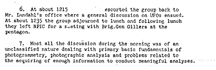
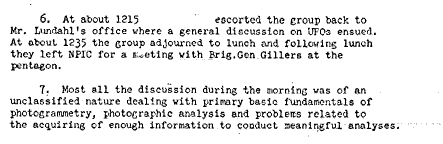

The U.S. Air Force has let a $300,000 contract to the University of Colorado to study reported UFO sightings. Brig.
Gen. Edward B. Gillers, USAF, is senior Air Force contact and Dr. Thomas
Ratchford is senior Air Force scientist on the project. The senior scientist from the University of Colorado
is Dr. E. U. Condon.
Upon arrival at NPIC, , XXXXXXXXXXXXXX escorted the group to Mr. Lundahl's
office. In the ensuing 10-15 minute discussion between Mr. Lundahl
and Dr. Condon the following points were clearly established:
Any work performed by NPIC to assist Dr. Condon in his investigation will not be identified as work
accomplished by CIA. Dr. Condon was advised by Mr. Lundahl to make no reference to CIA in regard to this work effort. Dr. Condon stated that if he felt it necessary to obtain an
official CIA comment he would make a separate distinct entry into CIA not related to contacts he has with NPIC.
NPIC will not prepare any written comments, will not analyze
information with the intent of drawing a conclusion, nor prepare written reports. NPIC personnel will be available to assist Dr. Condon by performing work of a photogrammetric nature, such as
attempting to measure objects imaged on photographs that may be part of Dr. Condon's analysis. Work performed by NPIC will be strictly of a technical nature using services and
equipement generally not available elsewhere.
Following this brief discussion in Mr. Lundahl's office the
group adjourned to the XXX conference room where a series of briefings was presented to
Dr. Condon and his group. Following a short introduction by XXXXXXXXXXX the following briefings were presented:
General discussion of photogrammetry, including definition, terminology and, in general, what photogrammetry
is and what it can do, XXXXXXXXXXXXXXX presented this discussion.
XXXXXXXXXXXXXXXXXXXXXXXXXXXXXXXXXXXXXXXXXXX followed with a presentation of the
analysis he had been conducting on UFO photography furnished by Dr. Ratchford. XXXXXXXXXXXXX
discussion was of a general nature and outlined the problems he had encountered because of lack of basic
information, such as camera focal length, make of camera, unspecified enlargements, etc.
XXXXXXXXXXXXXXXXXXXXXXX then gave a general discussion on the microdensitometer
and its application to image analysis.
XXXXXXXXXXXXXXXXXXXXXXXX followed this with a presentation on isodensitometer
experiments he has been conducting.
XXXXXXXXXXXXXXXXX then escorted the group into the new clean area where they
viewed and discussed the isodensitometer and the new Mann Microdensitometer.
Returning to the conference room, XXXXXXXXXXXXXXX briefed the group on measuring
instruments used in XXX and followed by a general presentation on the success and
failure XXX had experienced in trying to measure objects imaged on the second UFO
project assigned XXXX. Following this discussion XXXXXXXXXX then conducted the group into the instrument area where the Point Transfer
Device, Mann 880 Comparator, the Benson-Lehner Plotter and the NRI were viewed by the group.
At about XXXXXXXXXXX escorted the group back to Mr. Lundahl's office where a general discussion on UFOs ensued. At
about the group adjourned to lunch and following lunch they left NPIC for a meeting with Brig. Gen. Gillers at the pentagon.
Most all the discussion during the morning was of a unclassified nature dealing with primary basic fundamentals of
photogrammetry, photographic analysis and problems related to the acquiring of enough information to conduct
meaningful analyses.
 
